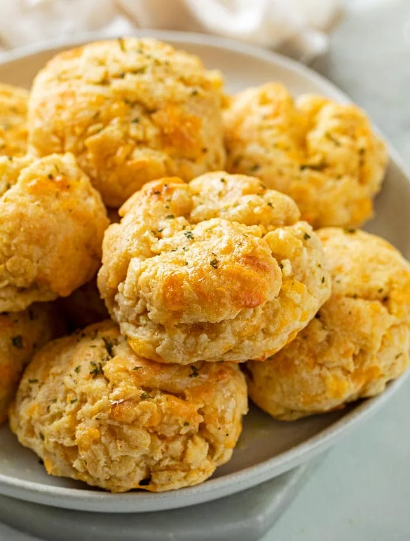

Cheddar Bay Biscuits Recipe

Description
Ingredients
- All-Purpose Flour
- Baking Powder
- Baking Soda
- Granulated Sugar
- Salt
- Garlic Powder
- Cayenne Pepper
- Dry Parsley
- 4 oz Shredded Cheddar Cheese
- Buttermilk
- Unsalted Butter
Steps
- Preheat oven to 450 degrees.
- In a large bowl, mix the flour, baking powder, baking soda, sugar, salt, garlic powder and cayenne pepper. Stir in the cheddar cheese and set aside
- 2 cups all-purpose flour
- 2 tsp baking powder
- 1/2 tsp baking soda
- 1 tsp granulated sugar
- 3/4 tsp salt
- 1/2 tsp garlic powder
- 1/4 tsp cayenne powder
- 4 oz shredded cheddar cheese
- In a separate bowl, mix the buttermilk and melted butter together until small lumps form.
- 1 cup cold buttermilk
- 1/2 cup unsalted butter
- Add the buttermilk to the large bowl with the flour and mix until a dough has formed and the ingredients are no longer dry. Do not overmix.
- Lightly grease a 1/4 measuring cup and scoop out the dough with it. Lace on a light colored, lightly greased baking sheet. Be sure to leave slightly more than an inch between each scoop.
- Bake for about 12 minutes, until they are golden brown.
- While biscuits are baking, combine melted butter, garlic powder, and parsley in small bowl. Brush the tops of biscuits when they come out of the oven and serve immediately.
- 2 tbsp melted butter
- 1/2 tsp garlic powder
- 1/4 tsp dry parsley